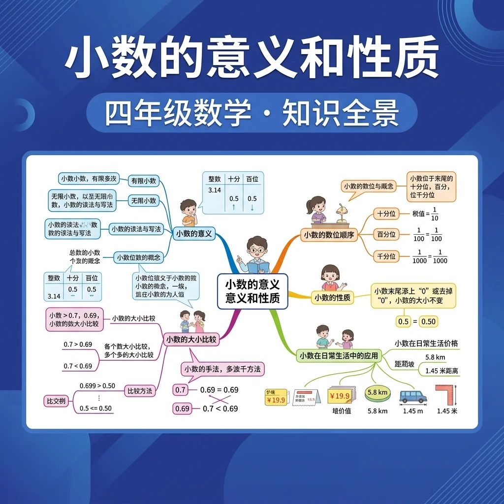
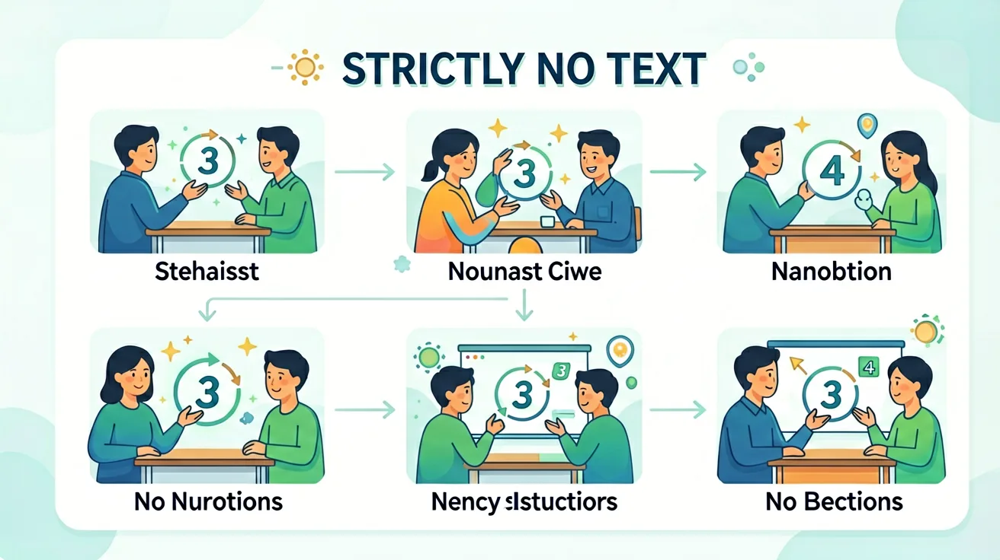

❓ 为什么0.5元和5角是一样的？
❓ 小数点和数字中间的点有什么区别？
❓ 为什么有的小数位数多有的少？
学完这一课，这些问题你都能自信地回答。
🎯 能说出小数的基本意义和组成部分
🎯 能判断小数在生活中的实际应用场景
🎯 能分析小数与分数之间的转换关系
✨ 深入理解小数，掌握小数的奥秘！
🌍 And（已知）：我们已经学会了整数和分数
⚡ But（问题）：但分数写起来比较麻烦，有没有更简便的方式？
💡 Therefore（新知）：因此我们学习小数，它是分数的另一种表达方式，计算更方便
学习前先测一测，了解你的起点 ✨
1. 下面哪个说法是正确的？
2. 你觉得学好这个知识最重要的是？
小数是分数的另一种写法。分母是10、100、1000...的分数，都可以写成小数。
一位小数的分母是10，两位小数的分母是100，三位小数的分母是1000。
| 百位 | 十位 | 个位 | 小数点 | 十分位 | 百分位 | 千分位 |
|---|---|---|---|---|---|---|
| 1 | 2 | 3 | . | 4 | 5 | 6 |
| 100 | 10 | 1 | 0.1 | 0.01 | 0.001 |
上面的数读作：一百二十三点四五六
小数末尾添上0或去掉0，大小不变！
⚠️ 中间的0不能去掉！3.05 ≠ 3.5
相邻两个计数单位之间的进率是 10
🧪 自己试试！输入一个小数，看末尾加0是否相等：
🎯 把小数和等值分数配对！
小数点是关键，左边整数右边小；十分位百分位千分位，位置不能弄混淆
和前测对比一下，看看你进步了多少！ 🚀
1. 学完本节课，你最大的收获是？
2. 如果让你把这个知识教给同学，你能做到吗？
💡 常见错误往往就在细节中，仔细检查每一步！
回忆：今天学了哪些关键词和规则？试着说出来。
用自己的话解释今天学的核心概念，不看书能说清楚吗？
用今天的知识解决一个实际问题，或写一个新例子。
把今天的知识与已有知识联系起来：有什么共同点？有什么区别？能不能自己创造一道新题？
1. 你能说出三个生活中使用小数的场景吗？2. 比较0.35和0.4哪个更大？为什么？3. 把分数1/4转化为小数形式
1. 将3.028精确到百分位 2. 计算：2.5×0.4+1.35 3. 判断：0.9̇等于1吗？说明理由
错因1：认为'小数就是比1小的数'（误区：-2.5、3.14都是小数）。诊断：强调小数定义是'十进制分数'。错因2：比较时只数位数（误区：0.3<0.29因为29>3）。诊断：建立逐位比较的流程图。错因3：运算时小数点随意对齐（如加法与乘法混淆）。诊断：用不同颜色标齐数位。
设计任务：为超市设计'价格比较系统'，要求能自动对比含小数的商品单价，并解释如何解决类似'9.99元 vs 10.01元'的比较问题（需考虑精确到分位的四舍五入策略）。
先独立作答，再点选项查看对错与错因。
下列哪个小数表示的价格最便宜？
把3元5角写成小数正确的是
下列哪个数在3.2和3.5之间？
1米8厘米=____米
答案：1.08
8厘米=0.08米，组合为1.08米
比较大小：0.4元____0.40元（填＞/＜/=）
答案：=
小数末尾添0不改变数值大小
关于小数末尾的0，正确的是
记录三种包装饮料的净含量和价格，计算每100ml的价格
小数由整数部分、小数点和小数部分组成，如3.14中3是整数部分，14是小数部分
小数表示不足1的部分，比如0.5表示半个单位
比较小数大小时要先比整数部分，再逐位比小数部分
在尺子上找1.5厘米，理解小数表示的实际长度
用小数表示饮料价格，如3元5角可以写成3.5元
✅ 通过钱币演示0.5元=0.50元
💡 不理解小数末尾零不影响大小
✅ 用方格纸书写练习
💡 未建立数位对齐意识
口诀：左整右零小数点，位数对齐比大小
类比：小数像楼梯，整数是大台阶，小数是小台阶
And：学生已掌握整数和分数的基本概念
But：不理解为什么需要在小数点后写数字
Therefore：通过分钱实例建立小数必要性认知
小数就像把1分成更小的部分。比如1元可以分成10角，1角就是0.1元。当我们需要表示比1元少、比1角多的钱时，比如1元2角3分，就可以写成1.23元。小数点像一面镜子，左边照出整个的1，右边照出被分碎的小部分。
🌍 超市价签上经常看到小数：牛奶标价6.5元表示6元5角，薯片3.99元就是差1分钱到4元。量身高时医生说"1米42"，其实就是1.42米哦！
把5元7角写成小数是？
And：已经会比较整数大小
But：遇到12.3和12.25时容易判断错误
Therefore：用数位对齐法突破比较难点
比较小数要像排队报数——先对齐小数点，从左到右逐位比。比如比12.3和12.25：先补零成12.30和12.25，就像比较1230和1225。第一位1=1，第二位2=2，第三位3>2，所以12.3更大。记住补零法宝：12.3=12.30哦！
🌍 运动会上，小明跳远3.05米，小红跳2.98米。裁判把成绩写成3.05和2.98，通过比较小数点后的"05"和"98"就能轻松判断胜负。
哪个数最大？

